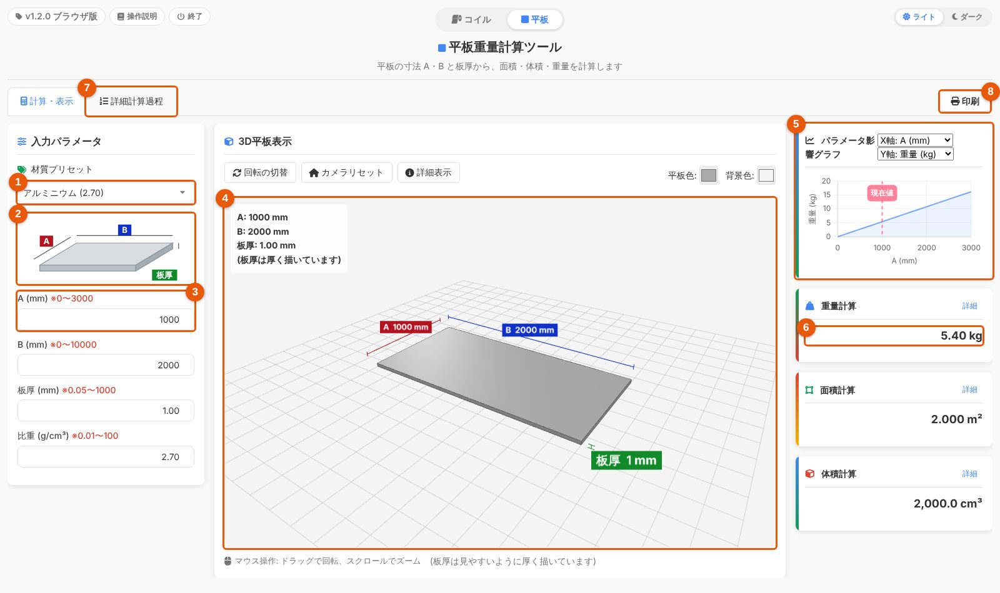
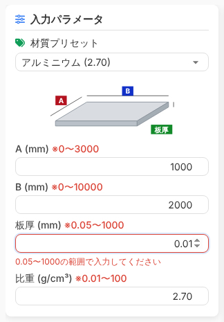
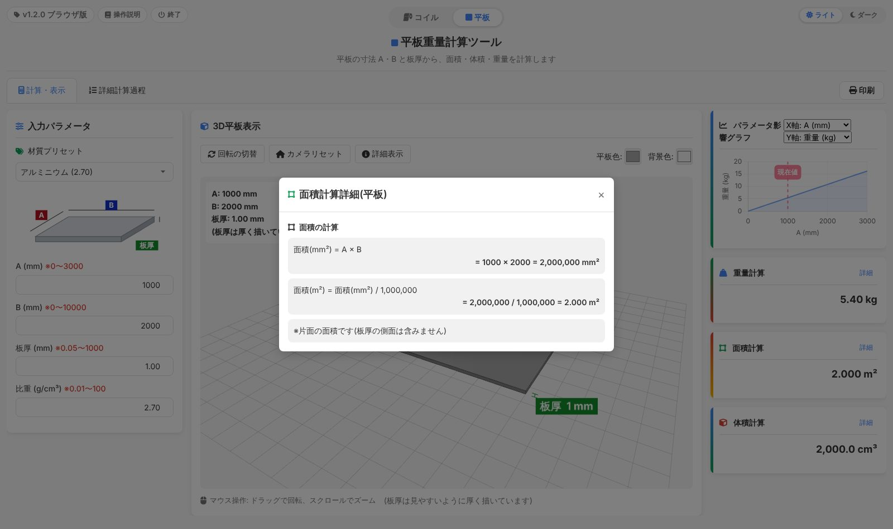
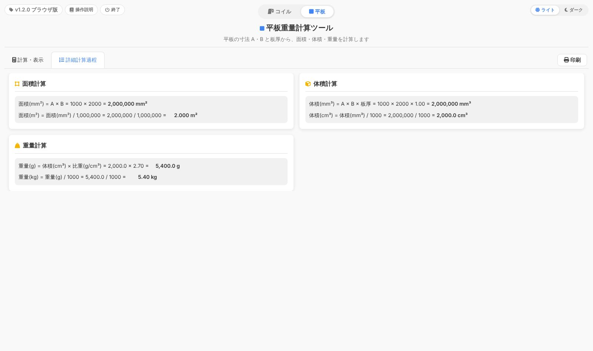
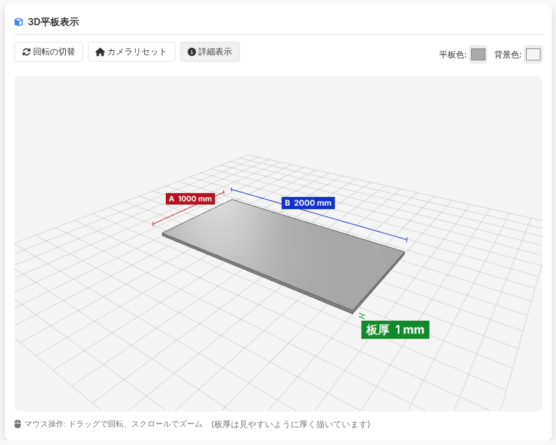
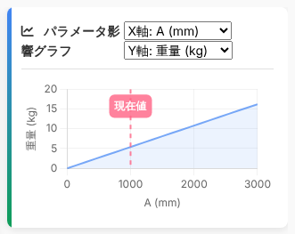
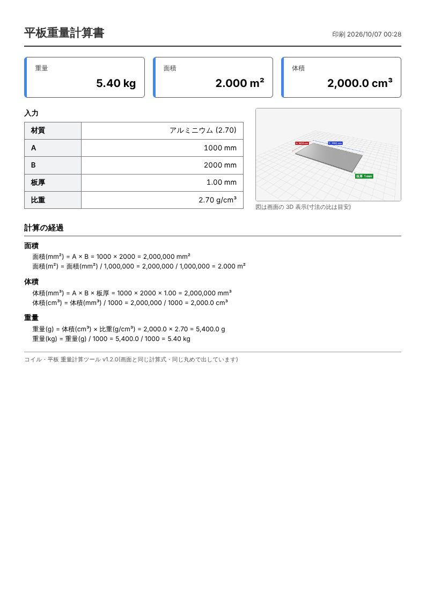

平板の使い方
平板の寸法 A・B と板厚・比重を入れると、重量(kg)・面積(m²)・体積(cm³)がすぐに出ます。画面の上の真ん中で「平板」を選ぶと、この画面になります。
画面の見取り図

| 番号 | 名前 | すること |
|---|---|---|
| 1 | 材質プリセット | アルミニウム・鉄・銅・ステンレスから選ぶと、比重と 3D の色が変わります |
| 2 | 寸法の図 | A・B・板厚がどこの長さかを示します |
| 3 | 入力欄 | A・B・板厚・比重を入れます(下にも続きます) |
| 4 | 3D の図 | 入れた寸法の板を立体で見せます。ドラッグで回し、ホイールで拡大・縮小します |
| 5 | パラメータ影響グラフ | 1つの値を変えると結果がどう変わるかを線で見せます |
| 6 | 結果 | 重量・面積・体積。それぞれの「詳細」で計算の途中が見られます |
| 7 | 詳細計算過程 | 計算の途中をすべて並べた頁に切り替えます |
| 8 | 印刷 | 計算書(A4 縦)を印刷します |
計算のしかた
- 1 の材質プリセットで材質を選びます。比重が自動で入ります。
- 3 の欄に A・B・板厚を入れます。単位はすべて mm です。どこが A・B かは 2 の図を見てください。
- 6 の結果を読みます。打つたびに計算し直します。
面積について面積は板の片面(A × B)です。板厚の側面は含みません。
入れられる範囲
| 欄 | 範囲 | 単位 |
|---|---|---|
| A | 0〜3000 | mm |
| B | 0〜10000 | mm |
| 板厚 | 0.05〜1000 | mm |
| 比重 | 0.01〜100 | g/cm³ |
範囲の外の値を入れたときその欄が赤くなり、下に範囲が出ます。赤い欄があるあいだは計算せず、結果・3D・グラフは前のままです。「印刷」も押せません。

結果と詳しい計算
重量は小数2桁、面積は小数3桁、体積は小数1桁で出ます。
結果のカードの「詳細」

「詳細計算過程」の頁

3D の図

操作はコイルの 3D と同じです(コイルの 3D の図)。
板厚が A・B に比べてとても薄いときは、見やすいように板厚を厚く描きます。そのときは図の下に「(板厚は見やすいように厚く描いています)」と出ます。計算は入れた値のままです。
グラフ

右上の2つの選択で、X 軸(A・B・板厚)とY 軸(重量・面積・体積)を選びます。ほかの欄は今の値のまま、X 軸の値だけを範囲いっぱいに動かしたときの結果が線になります。
印刷
- 上の「印刷」(8)を押します。
- 印刷の画面でプリンタを選び、「印刷」を押します(用紙は A4 縦)。
計算書には、入力した値・結果・3D の図・計算の途中・印刷した日時と版が入ります。
押せないとき赤い欄(範囲の外)があると印刷できません。

計算式
面積(mm²) = A × B 面積(m²) = 面積(mm²) / 1,000,000
体積(mm³) = A × B × 板厚 体積(cm³) = 体積(mm³) / 1000
重量(g) = 体積(cm³) × 比重 重量(kg) = 重量(g) / 1000